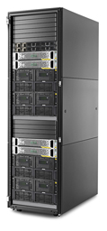

HPE StoreOnce 6600 Tech Specs:
- Form Factor - 42U rack
- Max capacity raw - 2.240 PB
- Max capacity usable - 1.728 PB
- Max Capacity w/Dedupe - 34 PB
- Host Interface 10GbE, 8Gb fibre, 1Gb Ethernet
- Hardware RAID 6
- Target Backup Apps - StoreOnce Catalyst, VTL and NAS
- Tape Emulation - LTO-2,3,4,5 Ultrium Tape Drives in MSL2024 Tape Library
- Maximum Number of Source Appliances - 384 Max
- Backup performance - up to 151.2 TB/hr
- Catalyst performance - up to 184 TB/hr
- Read Performance - up to 128 TB/hr